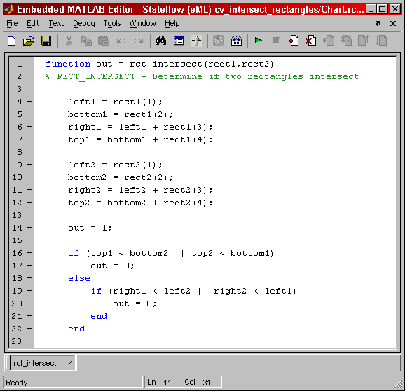
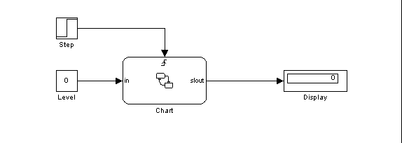
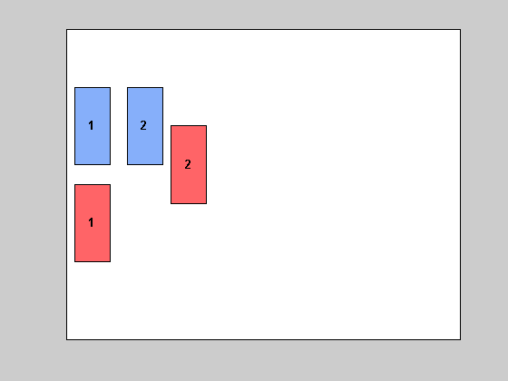
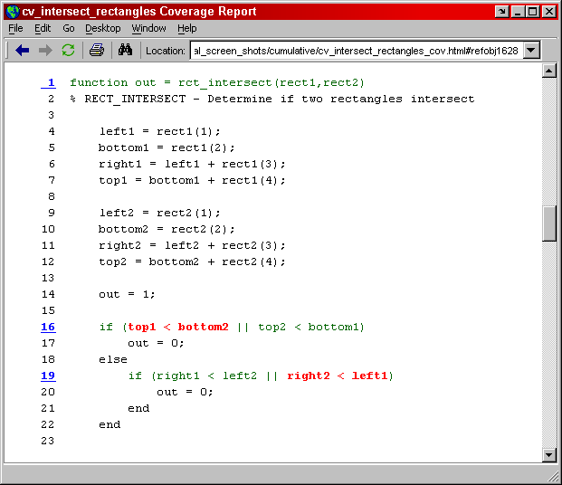
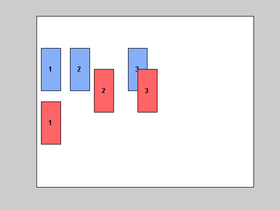
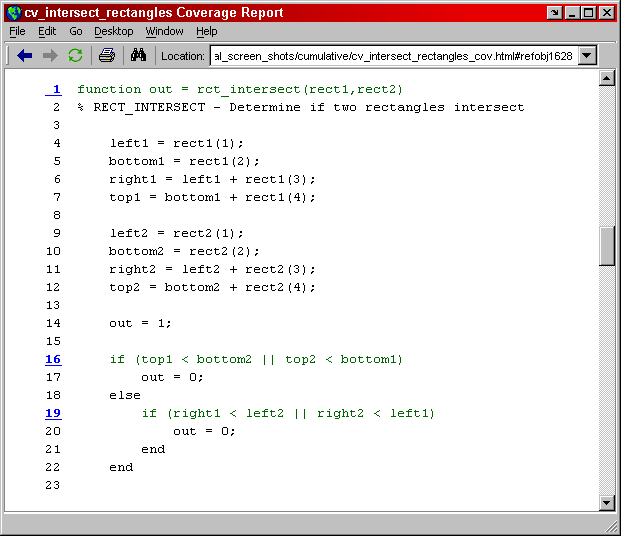
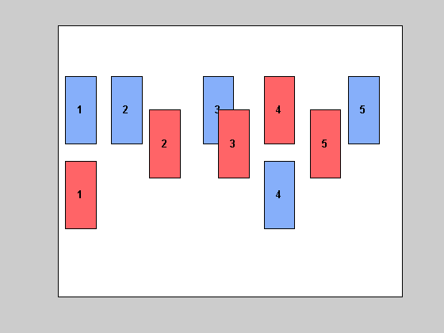

This demonstration shows an example of coverage analysis applied to a simple design problem and compares the coverage requirements for different metrics.
In this example, use an Embedded MATLAB Function within a Stateflow model as a framework to execute a simple algorithm for determining when two rectangles intersect.
The algorithm uses coordinates for the rectangles in the form of an origin, a height, and width combined together in a four element vector. The algorithm takes two rectangle vectors as inputs and returns a single Boolean output to indicate if the rectangles intersect.
NOTE: The commands in this demonstration are for manipulating user dialogs and can be ignored. Normally you interact graphically with a dialog.
cv_demo_helper_b(1); % ignore
The logic of this algorithm is implemented in the M code copied below. The first if statement checks for Y axis overlap, that is, if the first rectangle is completely below the second or the second is completely below the first. The second if statement checks for X axis overlap, that is, if the first rectangle is completely to the right of the second or the second is completely to the right of the first.
Both Y and X axis overlap must be present for the rectangles to intersect. If Y axis overlap is not present X axis overlap is not checked. This logic can be structured using only a single if statement or broken into the following if statements.
out = 1;
if (top1 < bottom2 | top2 < bottom1)
out = 0;
else
if (right1 < left2 | right2 < left1)
out = 0;
end
endThe test requirements to achieve a particular level of coverage are strongly dependent on the structure of the coded implementation. Complete statement coverage requires at least two tests. One test should not overlap in the Y axis resulting in execution of the first out = 0; statement. The other test should overlap in the Y axis but not in the X axis resulting in execution of the second out = 0; statement.
This model includes a simple visualization function to show the relative positions of both of the rectangles used in each test case.
Begin build for model "cv_intersect_rectangles"
End build for model "cv_intersect_rectangles"
covdata = ... cvdata
id: 293
type: TEST_DATA
test: cvtest object
rootID: 294
checksum: [4x1 struct]
startTime: 04-Sep-2003 18:18:32
stopTime: 04-Sep-2003 18:18:33
metrics: [1x1 struct]
Scroll though the HTML report to the coverage information displayed for the Embedded MATLAB function.
cv_demo_helper_b(3); % ignore
Full decision coverage requires a true and a false outcome for each if statement. Full decision coverage executes the else statement for each if statement (explicit or implied), which improves the likelihood of finding errors.
This example requires three test cases for full decision coverage. A single test case tests the true outcome for the top level if statement. Two test cases test the true and false outcomes for the nested if statement when the top level if statement is false.
Notice that both if keywords are colored green because they have both been tested true and false.

covdata = ... cvdata
id: 377
type: TEST_DATA
test: cvtest object
rootID: 294
checksum: [4x1 struct]
startTime: 04-Sep-2003 18:18:41
stopTime: 04-Sep-2003 18:18:41
metrics: [1x1 struct]
Full condition and MCDC coverage require 5 test cases. This level of coverage is less sensitive to the modifications that result when if statements are replaced with && and || operators in the conditions. The coverage requirements to fully satisfy this metric would be the same even if there were only a single if statement.
These test cases have a clear symmetry with the two test cases for statement coverage. Each is an X or Y axis mirror image of a statement coverage test case. This insures independent verification of both conditions in each of the if statements.
Notice that the entire expression for each if statement is colored green.

covdata = ... cvdata
id: 450
type: TEST_DATA
test: cvtest object
rootID: 294
checksum: [4x1 struct]
startTime: 04-Sep-2003 18:18:48
stopTime: 04-Sep-2003 18:18:48
metrics: [1x1 struct]
Finish the demo by closing the model.
cv_demo_helper_b(6); % ignore